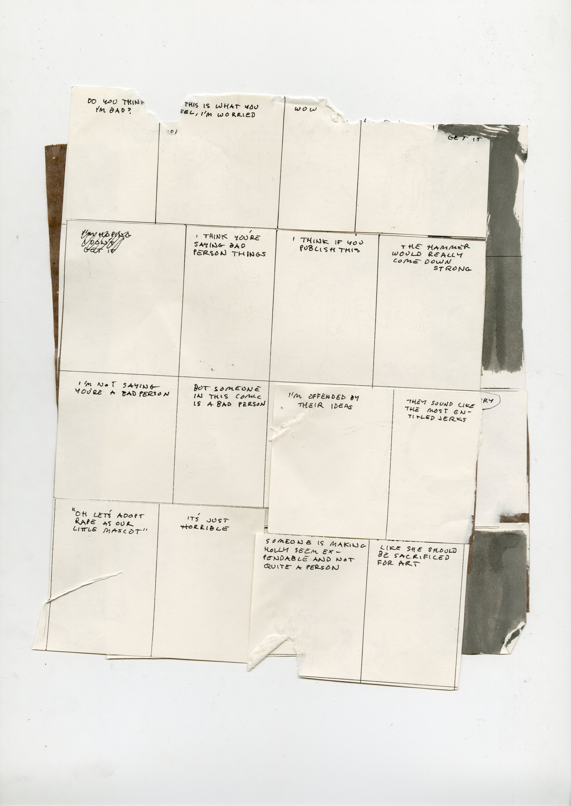
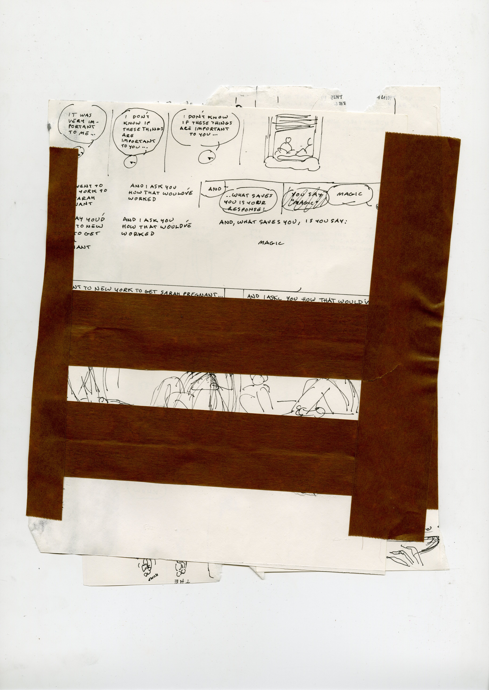

thinking of art as death. playing with shadows. absence of light/life. death as this realm of everyone that came before as well as everyone in the future (barring some sort of religious/scientific miracle granting immortality). why play with death?
- playing with shadows, back to the audience, audience looking along with you at your absence, projected on the wall. bring a mirror and fire into it, get more exciting. constant jokes about being mirrors, as well as long-standing lore. all the hijinx that took place in the mirror. mirror-world. 4chan.
- seeing my back absorb photons, seeing my back projected through me, onto the wall in front of me. my wall. see my wall. the back of my wall. see me absorb photons.
- all time before and all time since. time as a length. how long is time? a line drawn. at the end, an arrow? at either end. collapsing the ends (supposedly) while being more verbose in the process.
- death is total negation. it's the most human aspect of life for us humans ... it's the most heartfelt.. death is total.